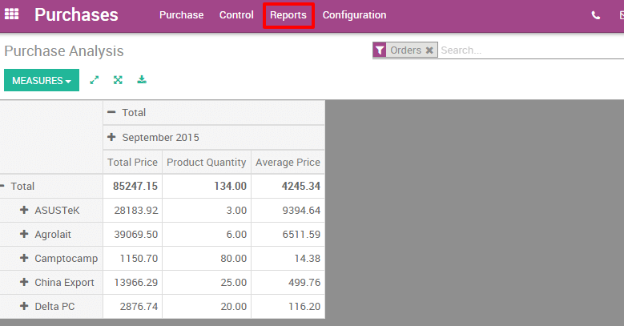
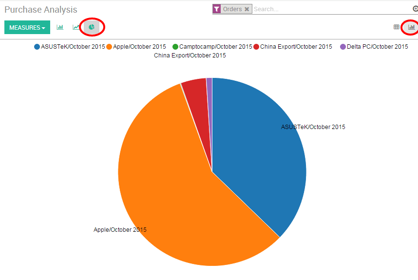
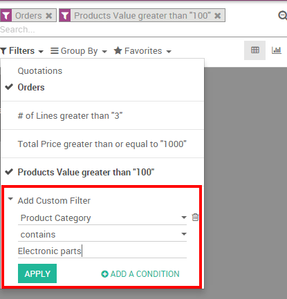

If your company regularly buys products from several suppliers, it would be useful to get statistics on your purchases. There are several reasons to track and analyze your vendor's performance :
你会看到你的公司是如何依赖于一个供应商的；
你可以就价格进行谈判;
可以检查单个供应商的平均交货时间；
等等。
For example, an IT products reseller that issues dozens of purchase orders to several suppliers each week may want to measure for each product the total price paid for each vendor and the delivery delay. The insights gathered by the company will help it to better analyze, forecast and plan their future orders.
配置
安装采购管理模块
在**应用**菜单，搜索并安装**采购管理**模块。

发布一些采购订单
Of course, in order to analyze your vendors' performance, you need to issue some Request For Quotations (RfQ) and confirm some Purchase Orders. If you want to know how to generate a purchase order, please read the documentation 从采购订单到开票和收货.
分析供应商
生成灵活弹性的报表
You have access to your vendors' performances on the Reports menu. By default, the report groups all your purchase orders on a pivot table by total price, product quantity and average price for the each month and for each supplier. Simply by accessing this basic report, you can get a quick overview of your actual performance. You can add a lot of extra data to your report by clicking on the Measures icon.
小技巧
By clicking on the + and - icons, you can drill up and down your report in order to change the way your information is displayed. For example, if I want to see all the products bought for the current month, I need to click on the + icon on the vertical axis and then on "Products".
Depending on the data you want to highlight, you may need to display your reports in a more visual view. You can transform your report in just a click in 3 graph views : a Pie Chart, a Bar Chart and a Line Chart: These views are accessible through the icons highlighted on the screenshot below.
注解
On the contrary to the pivot table, a graph can only be computed with one dependent and one independent measure.
定制报表
You can easily customize your purchase reports depending on your needs. To do so, use the Advanced search view located in the right hand side of your screen, by clicking on the magnifying glass icon at the end of the search bar button. This function allows you to highlight only selected data on your report. The filters option is very useful in order to display some categories of datas, while the Group by option improves the readability of your reports. Note that you can filter and group by any existing field, making your customization very flexible and powerful.
小技巧
您可以保存并再次使用定制的过滤，从**高级搜索视图**中点击**收藏**，然后**保存当前的搜索**。保存的过滤器将从**收藏**菜单访问。